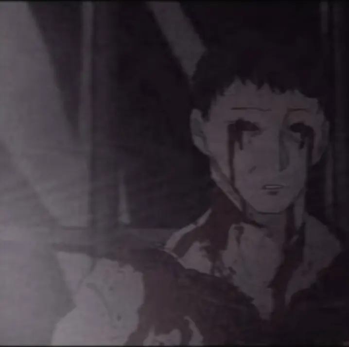
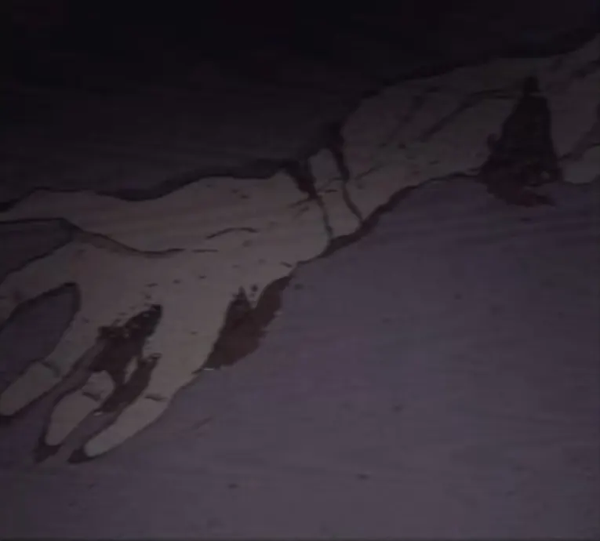
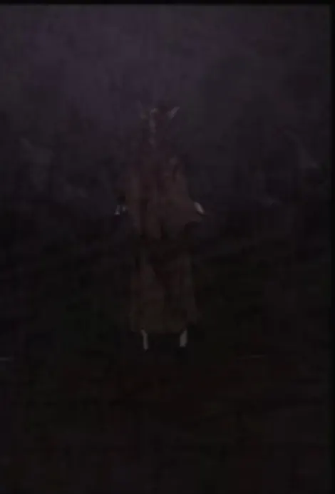
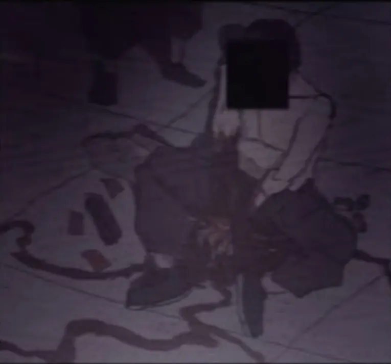
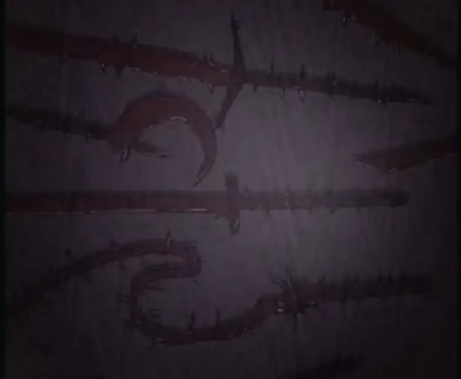
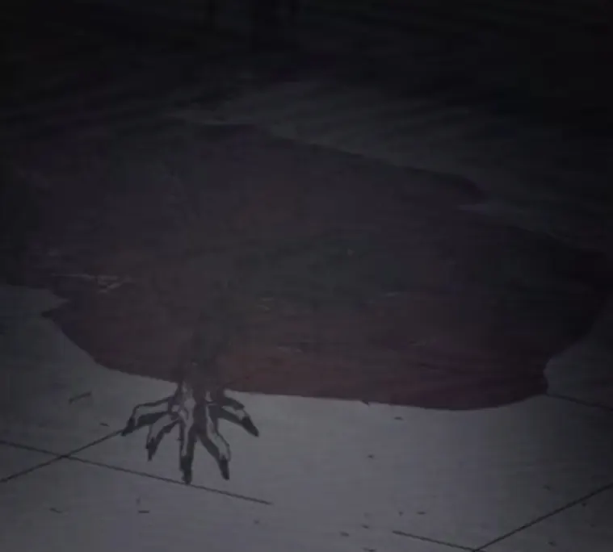
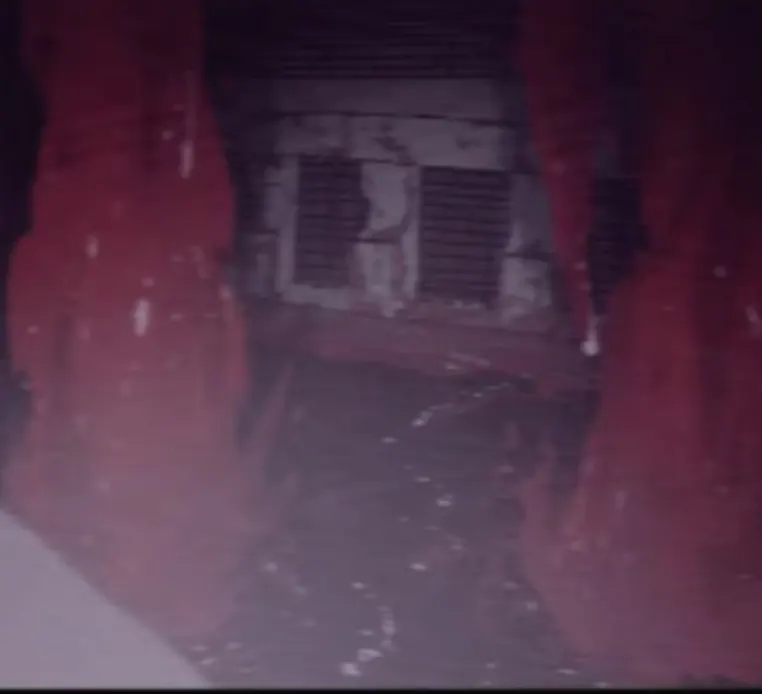
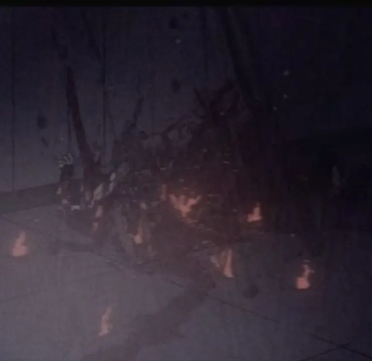

F.H.C 극비 보안 문서
타락교와 혈교 관련 기록을 기록면 단위로 분할한 내부 열람 문서이다.
F.H.C 극비 보안 문서
개요
본 정보에는 F.H.C 극비 분석 부서에서 관리하는 오컬트 위협 사례와 생체 오염 자료가 포함된다.
타락교와 혈교는 우시노다교 내부의 의식 계열로 통합 관리되며, 현장에서는 별도 양상으로 관측된다.
타락교
Corrupted Cult
타락교는 우시노다를 신으로 숭배하는 오염 신앙 계열이다. 이들은 저주의 힘을 신성한 축복으로 받아들이며, 인간의 육체와 정신을 변질시키는 힘을 축복이라 부른다.
특징
- 우시노다를 신으로 숭배한다.
- 타락의 힘을 저주가 아닌 축복으로 받아들인다.
- 육체 변형과 불멸성을 신앙의 증거로 여긴다.
- 인육 섭취와 의식을 통해 변형을 억제하거나 강화한다.
- 현대 사회 내부에 비밀 조직 형태로 침투해 있다.
신원불명의 신자
Unidentified Believer
신원불명의 신자는 타락교 내부에서 가장 일반적으로 발견되는 신자 유형이다. 타락의 힘을 받아들인 뒤 신체 변형을 겪으며, 인간으로서의 원래 형태를 점차 잃어간다.
행동 양상
- 단독 또는 소규모 집단으로 활동한다.
- 일반인처럼 위장할 수 있다.
- 신체 곳곳에 타락의 흔적이 남아 있다.
- 살해 후 신선한 살을 섭취하는 습성이 있다.
- 섭취 행위로 일시적으로 원래 모습을 회복한다.

가면을 쓴 존재
Masked Entity
가면을 쓴 존재는 타락교의 보호를 받는 특수 괴이 개체다. 본래 야생의 짐승이었으나 우시노다의 타락에 의해 변형된 것으로 추정된다.
특징
- 야생 동물 기반의 변형 개체로 추정된다.
- 가면 또는 가면과 유사한 외골격을 지닌다.
- 타락교 내부에서 신성한 동물로 취급된다.
- 의식장 중심부에서 발견되는 경우가 많다.
- 일부 개체는 신자들에게 명령을 내리는 듯한 행동을 보인다.

타락의 과정 및 형태
Corruption Process
타락의 힘을 받아들인 생명체는 점진적인 신체 변형을 겪는다. 초기에는 피부 변색, 체온 변화, 감각 이상, 골격 통증이 보고된다.
관찰된 변형 증상
- 골격 뒤틀림과 뼈의 비정상적 성장
- 피부 파열과 근육 구조 변형
- 감각 기관 손실과 자아 붕괴
- 기억 손상과 폭력성 증가
- 인간 형태의 일시적 회복
- 불완전한 불멸성 획득

혈교
Blood Cult
혈교는 피의 길을 숭배하는 의식 계열이다. 피를 생명 유지 물질이 아니라 문을 열고, 형태를 만들고, 힘을 전달하는 매개체로 취급한다.
특징
- 피의 길을 숭배한다.
- 피를 의식의 핵심 매개체로 사용한다.
- 피를 이용해 무기, 경로, 덫, 저장소를 만든다.
- 대량 출혈, 희생 의식, 혈액 저장 의식과 관련되어 있다.

혈액 이동 경로 조정
Blood Route Control
혈액을 이용한 능력은 혈액의 이동 경로를 조정할 수 있는 것으로 확인되었다. 출혈을 막거나, 외부 혈액을 응고시켜 무기와 방어 수단으로 활용한다.
- 출혈로 인한 사망 방지
- 혈액 흐름 제어
- 혈액 응고를 이용한 방어막 생성
- 혈액을 칼날, 창, 사슬 형태로 변형

혈무의 제작 과정
Blood Weapon Creation
혈무는 혈액을 근접 무기에 덮은 뒤 피의 의식을 통해 강화한 무기를 뜻한다. 의식이 완료된 혈무는 기존 무기보다 높은 공격력과 내구성을 지닌다.
- 근접 무기에 혈액을 덮어 제작한다.
- 피의 의식이 필요하다.
- 무기의 내구성과 절삭력이 증가한다.
- 타락체에게 높은 피해를 입힌다.

피의 호수를 거니는 자들
Walking Through the Lake of Blood
혈액 웅덩이는 혈교 신자들에게 저장소이자 이동 경로로 사용된다. 현장 대응 인원은 혈액 웅덩이를 단순한 오염 물질로 판단해서는 안 된다.
- 혈액 웅덩이에 접근하지 말 것
- 웅덩이 내부 은닉 가능성을 고려할 것
- 혈액용기를 사용해 회수 및 격리할 것
- 고열 장비로 확산을 차단할 것

혈액 저장소
Blood Reservoir
혈액 저장소는 혈액 사용자들의 보급 수단이며, 전투 중 손실된 혈액을 보충하는 용도로 사용된다. 일부 의식에서는 중심 물체로 쓰이기도 한다.
- 대량의 혈액이 저장되어 있다.
- 전투 중 회복 수단으로 사용된다.
- 오염 가능성이 높아 일반 접촉은 금지된다.
- 회수 시 밀폐형 혈액용기 사용이 권장된다.

제압된 타락체
Suppressed Corrupted Entity
혈무와 화염을 함께 사용한 공격은 타락체의 재생 능력과 신체 변형을 억제하는 데 효과적이다.
- 혈무를 이용한 근접 절단
- 화염을 이용한 조직 소각
- 혈액 경로 봉쇄
- 타락 조직의 재생 차단
- 봉인구와 병행 사용

타락교와 혈교 비교
비교 기록
- 타락교는 우시노다의 타락과 신체 변형을 숭배한다.
- 혈교는 피의 길과 혈액 의식을 중심으로 움직인다.
- 타락교의 핵심 위협은 괴이화와 불멸성이다.
- 혈교의 핵심 위협은 혈액 무기화와 이동 경로 조작이다.
- 두 계열 모두 우시노다교 통합 위협 안에서 관리된다.
현장 대응 경고
작전 지침
타락교 신자는 인간의 외형을 유지하고 있어도 안전하지 않다. 혈교가 남긴 혈액 웅덩이는 단순한 혈흔이 아니며, 이동 경로, 저장소, 덫, 원거리 공격 수단으로 사용될 수 있다.
- 단독 접근 금지
- N.H.C 또는 S.I.D 동행 필수
- 혈액 웅덩이 접촉 금지
- 의식장 발견 시 현장 봉쇄 우선